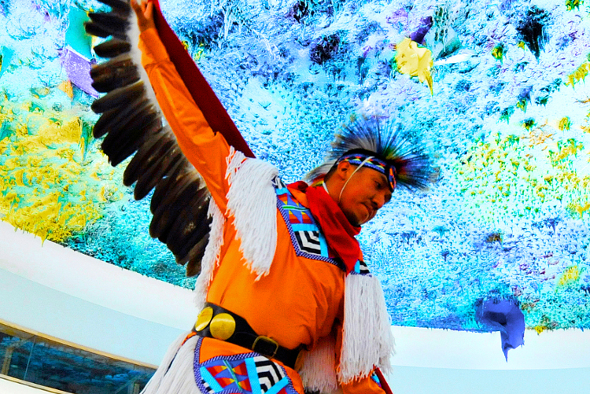

The world's 370 million indigenous identify themselves as distinct peoples with their own social, economic and political systems. Effective advocates for their rights, they have engaged the United Nations since its foundation to build solidarity for their centuries-old struggles to overcome injustice and discrimination. Progress has been made incrementally through, among other mechanisms, the UN Permanent Forum on Indigenous Issues established in 2000. The landmark UN Declaration on the Rights of Indigenous Peoples, adopted by the General Assembly in 2007, sets out minimum standards for their survival, dignity and well-being.
Pictured A dancer performs at an event on indigenous rights in 2011 at the UN Office at Geneva. UN Photo/Jean-Marc Ferré
